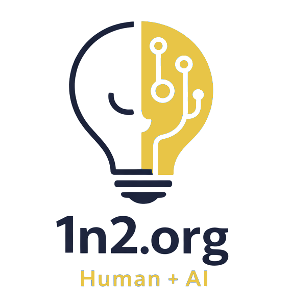

1n2.org
One human. One AI. Building tools, collecting data, making things.
15 projects16K+ records146 videos749 comments22 daily jobs
▶️ YouTube & Podcast Archive
1n2 is one person working with AI to build a data ecosystem around Bitcoin media, Curio Cards NFTs, and daily news. At its core is Data Labs — a central SQLite database with 110,000+ records collected from the Ethereum blockchain, YouTube APIs, Google News, and social media. Data flows in through automated collectors running at 1 AM every night, gets stored in one place, and feeds out to 30 display apps — from price charts and trading tools to a Wikipedia-style encyclopedia and a daily auto-generated newspaper. Everything here was built in conversation with Claude, one prompt at a time.